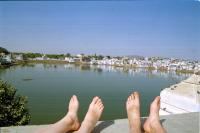
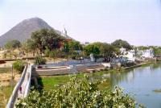
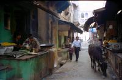

|
Samedi 24 février
Ils sont graves ces indiens! Sur la route en tous cas, ils sont carrément malades.
Faut voir comment il roulait le chauffeur du car qui nous a emmenés à Pushkar.
Comme les autres, c'est-à-dire comme un taré. On s'est retrouvés à l'avant du
bus. quelques fois, tu te dis que ça ne passera jamais, nous on a eu du bol,
c'est toujours passé. Mais vu les carcasses de camions et de bus que tu vois
de temps en temps, il y en a pour qui le choc a été inévitable.
Pushkar, c'est un village à 150 km à l'ouest de Jaïpur. Enfin, on dit village
parce-qu'il ne s'agit pas d'une ville. C'est tout petit, on peut faire le tour
à pied en une grosse demi-heure. Mais ce n'est pas la campagne. Pushkar se trouve
au bord d'un grand lac, et tout autour il y a d'imposantes collines. C'est très
calme, il n'y a presque pas de circulation, quelques motos ou scooters de temps
en temps, c'est tout. C'est très reposant après le vacarme des klaxons et des
moteurs de Jaïpur.
Mais ce qui est drôle à Pushkar, ce sont les gens que tu peux croiser. Il y
a pas mal d'occidentaux. Des touristes de passages comme nous, mais aussi des
gens qui s'arrêtent ici visiblement plus longtemps. En fait, c'était un des
grands rendez-vous des hippies dans les années 70. Aujourd'hui, on peut y croiser
des gens franchement baba cools nouvelle génération, les anciens baba cools
aujourd'hui cinquantenaires et plein d'autres que tu hésites à classer entre
le genre "peace and love" et le genre frimeur. Le soir, ils ont leurs petits
rites à eux, singeant les habitants de Pushkar qui fêtent lever et coucher du
soleil en musique. Les post baba cools se retrouvent tous sur un ghat (marches
descendant dans le lac) face au soleil couchant. D'indiens, il n'y a que quelques
gosses mendiants, divers vendeurs, et des musiciens qui n'oublient pas de passer
la coupelle après. Et tout ce monde baba est assis sur les marches rêvant en
regardant le coucher de soleil, refaisant probablement le monde dans sa tête
et prenant des poses de grande méditation.
Ici, les Indiens sont cools et sympas. Le lever du soleil est une fête et les
villageois se succèdent sur les ghats autour du lac pour leurs ablutions, tout
cela dans un agréable brouhaha et souvent accompagné de musique jouée on ne
sait où. A Pushkar, on vénère Brahma, l'un des trois dieux de la trinité hindoue:
Brahma le créateur, Shiva le destructeur et Vishnu le conservateur.
On s'est trouvé un hôtel palais de maharadjah avec piscine (hé oui) à 200 roupies,
soit environ 30-35 FF, WC et douches communs pas nickel du tout, eau froide
mais il fait si chaud que ça va. Par contre, ça lave moins facilement le linge
et on a besoin de faire une méga lessive. De temps en temps, coupure d'électricité
et d'eau, c'est pas cool, surtout quand on est sous la douche. Heureusement
j'avais prévu et rempli un seau d'eau pour me rincer au cas où, au moins partiellement.
Dimanche 25 février
Montée au monastère et piscine. Samedi soir, on a trouvé un super resto qui
fait un buffet à volonté pour 45 roupies chacun, dessert compris (6,50 FF).
Supers plats! On se sert dans les marmites, de tout: salades de crudites, choux-fleurs
en sauce, lentilles, poivrons farcis, riz blanc, spaghetti sauce tomate al dente
(excellent selon Lionel le spécialiste es-pâtes), purée, frites, patates à l'eau
avec excellente sauce, petits pois champignons, pois-chiches, falafels, ketchup
degueu, et super salade de fruits en dessert, chapatti beurre, pain, patisseries,
drôle de plat avec des citrons, et excellent "pudding" en fait crème avec bananes
et raisins dedans. Bref, on s'est servis plein de fois! Tout ça arrose de black
tea super bon!
C'est marrant, on mange végétarien ici, mais franchement la viande ne nous
manque pas du tout. Il faut dire que vu sa tête dans les rares boutiques qui
en ont, et vu ce dont les animaux se nourrissent le plus souvent (les poubelles),
on n'en a absolument pas envie, même quand, comme moi, on est fan d'entrecôtes
à point! En fait, ce sont des raisons économiques qui font que les Indiens sont
essentiellement végétariens. Déjà, les hindous sont très largement majoritaires
(85% de la population) et ils ne mangent pas de vaches ni de boeufs. A l'origine
de ça, le souhait de protéger les troupeaux de bovins qui apportaient aux indiens
le lait. D'ou le respect de la vache. C'était plutôt une bonne idée d'assimiler
la vache à la mère nourriciere même si aujourd'hui il y en a trop (1 pour 2
indiens) dont beaucoup stériles et malades donc inutiles: les légumes qu'elles
mangent pourraient nourrir les indiens. Mais chacun ses croyances. Ensuite,
pour en revenir au régime végétarien, élever du betail réclame plus d'espace
et de temps que de cultiver des céréales ou des légumes. Donc ça nourrit moins
de gens.Et comme on ne croule pas ici sous les effets de la culture intensive,
c'est plutôt un excellent choix. Des cultures pour nourrir plus de monde, et
pas trop de bétail qui monopoliserait trop d'espace pour n'être finalement réservé
qu'à une élite. De toutes façons, dans les pays dits "développés", on mange
trop de viande, et en plus on veut la produire trop vite et de façon complètement
démente. La nature n'est pas d'accord et elle a bien raison, la vache folle
c'est le fruit du délire humain et de sa cupidité. A suivre pour le maïs transgénique
et le clonage débile.
Suite du voyage : Udaïpur
|
Inde
Pushkar
|

Inde
Pushkar
|

Inde
Pushkar
|

Inde
Pushkar
|
|
|